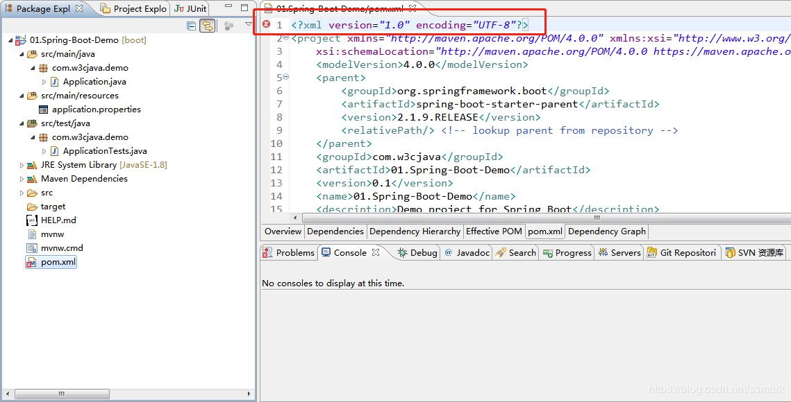

原文连接:https://www.cnblogs.com/cosecholand/p/11668325.html
什么是 Spring Boot
Spring Boot是Spring团队设计用来简化Spring应用的搭建和开发过程的框架。该框架对第三方库进行了简单的默认配置，通过Spring Boot构建的应用程序只需很少的Spring配置即可快速的运行起来。
使用 Spring Boot 好处
简单、快速、便捷。
搭建普通Spring Web项目项目的一般流程：
- 配置web.xml，整合Spring和SpringMvc
- 整合Spring和Mybatis，配置Spring事务
- 配置日志文件
- 部署Tomcat调试
.......
一系列的配置过程繁杂，很容易遗漏掉，即便是随便搭建一个简单的爬取某个页面的邮箱存入数据库的小项目，都要从头到尾的将配置流程走一遍。
如果使用Spring Boot，配置则简化了很多，只需要引入响应的几个maven依赖，进行简单的几个配置就可以快速方便的搭建一个Web项目。
开启Spring Boot之旅
线上构建
- 访问http://start.spring.io
- 选择Maven Project、Java、Spring Boot 2.1.9构建，点击Generate生成对应的文件。项目信息简单配置。

备注：
Dependencies处可通过添加相应的依赖，在生成项目文件时就会自动添加，比如，如果我们要做Web开发，只要在依赖里添加Web即可。
MyEclipse，Import -> Existing Maven Projects -> Next -> 选择解压后的文件夹 -> Finsh!
通过Myeclipse构建项目
File -> New -> Spring Starter Project新建项目
- 配置项目相关基本信息
- 选择依赖，比如Spring Web
Finish OK，Spring Boot项目构建完成。
Tips：
导入或者Myeclipse构建项目有可能会出现pom.xml文件首行出现错误：Unknown pom.xml /demo line 1 Maven Configuration Problem。
解决方案：
在pom文件中的
项目结构解析
Spring Boot 的基础结构共三个文件:
src/main/java程序开发以及主程序入口：Applicationsrc/main/resources配置文件存放位置：application.propertiessrc/test/java测试入口：ApplicationTests
- 在Application 右键run启动Spring Boot项目
生成的Application和ApplicationTests类都可以直接运行来启动当前创建的项目，由于目前该项目未配合任何数据访问或Web模块，程序会在加载完Spring之后结束运行。
Web开发
默认Tomcat启动项目
spring-boot-starter-parent指定了当前项目为一个Spring Boot项目，它提供了诸多的默认Maven依赖。
Spring Boot提供了许多开箱即用的依赖模块，这些模块都是以spring-boot-starter-XX命名的。比如要开启Spring Boot的web功能，只需要在pom.xml中配置spring-boot-starter-web即可：
- pom.xml中添加支持web的模块
<dependency>
<groupId>org.springframework.boot</groupId>
<artifactId>spring-boot-starter-web</artifactId>
</dependency>因为其依赖于spring-boot-starter-parent，所以这里可以不用配置version。
pom.xml 文件中默认有两个模块：
spring-boot-starter：核心模块，包括自动配置支持、日志和 YAML，如果引入了spring-boot-starter-webweb 模块可以去掉此配置，因为spring-boot-starter-web自动依赖了spring-boot-starter。spring-boot-starter-test：测试模块，包括 JUnit、Hamcrest、Mockito。
- 编写Controller层
package com.w3cjava.controller;
import org.springframework.web.bind.annotation.RequestMapping;
import org.springframework.web.bind.annotation.RestController;
@RestController
public class HelloWorldController {
@RequestMapping("/hello")
public String index() {
return "Hello World";
}
}@RestController 相当于Spring中的@Controller和@ResponseBody组合使用的，直接以 json 格式输出。
启动主程序，打开浏览器访问http://localhost:8080/hello 结果界面如下，你已经可以愉快的开发Web项目了。
配置Jetty启动项目
在pom.xml文件中找到spring-boot-starter-web，在其依赖中排除tomcat依赖
<!-- 支持web的模块依赖 -->
<dependency>
<groupId>org.springframework.boot</groupId>
<artifactId>spring-boot-starter-web</artifactId>
<!-- 排除tomcat依赖 -->
<exclusions>
<exclusion>
<groupId>org.springframework.boot</groupId>
<artifactId>spring-boot-starter-tomcat</artifactId>
</exclusion>
</exclusions>
</dependency>- 添加jetty依赖
<!-- jetty依赖 -->
<dependency>
<groupId>org.springframework.boot</groupId>
<artifactId>spring-boot-starter-jetty</artifactId>
</dependency>- 启动项目主程序，可见tomcat已经替换为jetty了。
- 访问 http://localhost:8080/hello 页面结果显示正常。
单元测试
模拟对 http://localhost:8080/hello 发送请求测试
package com.w3cjava;
import static org.hamcrest.CoreMatchers.equalTo;
import static org.springframework.test.web.servlet.result.MockMvcResultMatchers.content;
import static org.springframework.test.web.servlet.result.MockMvcResultMatchers.status;
import org.junit.Before;
import org.junit.Test;
import org.junit.runner.RunWith;
import org.springframework.boot.test.context.SpringBootTest;
import org.springframework.http.MediaType;
import org.springframework.test.context.junit4.SpringRunner;
import org.springframework.test.web.servlet.MockMvc;
import org.springframework.test.web.servlet.request.MockMvcRequestBuilders;
import org.springframework.test.web.servlet.setup.MockMvcBuilders;
import com.w3cjava.controller.HelloWorldController;
@RunWith(SpringRunner.class)
@SpringBootTest
public class ApplicationTests {
private MockMvc mvc;
@Before
public void setUp() throws Exception {
mvc = MockMvcBuilders.standaloneSetup(new HelloWorldController()).build();
}
@Test
public void getHello() throws Exception {
mvc.perform(MockMvcRequestBuilders.get("/hello").accept(MediaType.APPLICATION_JSON))
.andExpect(status().isOk())
.andExpect(content().string(equalTo("Hello World")));
}
}
热部署
- 添加spring-boot-devtools依赖
<!-- 热部署依赖 -->
<dependency>
<groupId>org.springframework.boot</groupId>
<artifactId>spring-boot-devtools</artifactId>
<optional>true</optional>
</dependency>- 启动主程序
- 在HelloWorldController中添加新的映射方法
@RequestMapping("/hello1")
public String index1() {
return "Hello World1";
} 直接访问 http://localhost:8080/hello1 正常
spring-boot-maven-plugin插件
spring-boot-maven-plugin：能够以Maven的方式为应用提供Spring Boot的支持，即为Spring Boot应用提供了执行Maven操作的可能。
Spring Boot Maven plugin的5个Goals
- spring-boot:repackage，默认goal。在mvn package之后，再次打包可执行的jar/war，同时保留mvn package生成的jar/war为.origin
- spring-boot:run，运行Spring Boot应用
- spring-boot:start，在mvn integration-test阶段，进行Spring Boot应用生命周期的管理
- spring-boot:stop，在mvn integration-test阶段，进行Spring Boot应用生命周期的管理
- spring-boot:build-info，生成Actuator使用的构建信息文件build-info.properties
小结
总体上而言，通过Spring Boot可以快速构建项目，如果需要使用某个特定的功能，只要添加对应的依赖及简单配置项即可。
欢迎扫面下列二维码关注“余弦的自留地”公众微信号